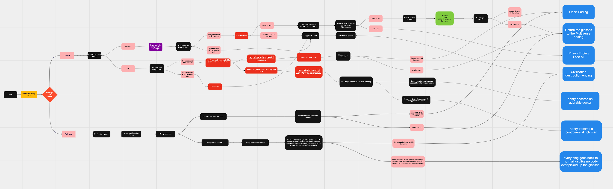

Inspiration
What can technologies do and how they can affect us? The fictional relationship between the character and the hypothetic knowledge
glasses tells a vivid story of the ethical challenges we might face when dealing with a piece of noble technology.
Our story is in the form of design fiction, which “incorporates speculative fiction and prototyping,
juxtaposing materials and narrative to visualize and start conversations about a particular scenario (Bleecker, 2009).
We use it not to imagine a future technology necessarily but, drawing on Langdon Winner (1986), to imagine
forms of life that might materialize.”
Summary
One of the major ethical tensions Henry’s Ethics Adventure is dealing with focuses on utilitarianism and duty.
In the adventure, the character can choose whether to use the knowledge glasses as an advantageous tool to pass the
exam and earn the degree to become a neuroscientist. Later on, Henry will also be faced with the choice of whether
or not to help the sick child with the glasses. Kant’s ethics suggests that the rule of conduct is unconditional or
absolute for all agents, the validity or claim of which does not depend on any desire or end. This says that Henry
shouldn’t use the glasses to cheat for the degree, of course. But in the same way he shouldn’t use it to help the
sick child. This is a classic dilemma in Kant’s ethics. In this adventure, players can choose to act according to
utilitarianism. Utilitarians think the end justifies the means if a methodology produces the greatest good for all.
It is admitted that Henry has been using a technology that is unfair to others, but as long as he’s using it to free
the patients from suffering, his actions are justified. The stolen glasses, as seemed to be dramatic, is a turning
point where Henry started to reflect on what he should do with the knowledge glasses. Without the glasses, he could
not do anything he wanted. In one ending, Henry decided to found a school and teach students with the knowledge from
the glasses. He realized that the extreme way of utilitarianism, which only cares about the outcomes and allows the
use of knowledge glasses whatsoever, isn’t a sustainable way of doing research and realizing personal value.
The adventure also covers a discussion of virtue. In the storyline where Henry did not use the glasses to cheat,
the ethical decisions have been further explored. The knowledge glasses gave the formulas of the medicine that Henry
used to treat the child. As the owner of the knowledge glasses, it is not considered morally wrong with him to
charge for the patent. However, he can choose to act from a virtuous position and make the medicine free to the
public, thus saving more people. In this storyline, the players can “regret” his or her choice after seeing a child
suffer due to the unaffordable medicine. This reflects a scenario in real life that people tend to sympathize with
individuals and act out of benevolence rather than being a moral perfection from the beginning.
To illustrate the idea of technologies and the “universal fairness,” another character Dr. X is introduced to our
story. Dr. X believes that giving all humans access to the knowledge glasses will create a world of fairness. This
idea connects to the material from “Boss Bot” by Flash Forward in a sense that both technologies create a situation
where technologies work to promote fairness and less competition. In Henry’s adventure, this ultimate fairness was
pursued by Dr. X actually led to a catastrophic ending. This particularly has to do with our introduction of the
knowledge glasses, that it only provides knowledge on-demand and does not help with the actual learning purpose.
All the knowledge will be temporary to the user and he/she learned nothing afterwards. Therefore, this mechanical
way of getting knowledge defeats the purpose of learning, just as the personality metrics restrict types of career
one should pursue. Once people are accustomed to the convenience of the knowledge glasses, they will be reluctant to
go through the normal learning process and will cease to innovate. In another storyline, Henry will be given the
chance to realize this problem and stop Dr. X. At this point, the only method to stop this catastrophe is to destroy
all pairs of knowledge glasses, even though it means Henry has to destroy his own.
Related Course Material
1. Utilitarianism and Duty
O'Neill, Onora "A Simplified Account of Kant's Ethics," in Gendler-Siegel-Cahn, The
Elements of Philosophy (2008), New York: Oxford University Press, pp. 112-114
2. Ethics and Digital Labor
Flash Forward, “Boss Bot,” September 29, 2020: https://www.flashforwardpod.com/2020/09/29/boss-bot/
Mind Map

Click and View More
Acknowledgements
The authors owns the copyright of any contents and designs of this website.
Any forms of plagiarism or misuse is strictly prohibited.
Contributors
Yanglin Tao - Head of Web Development
Cody Jiang - Head of Concept & Design
Linda Zhao, Wenchi Wang - Head of Production